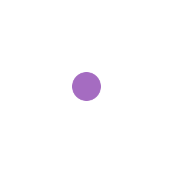
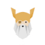
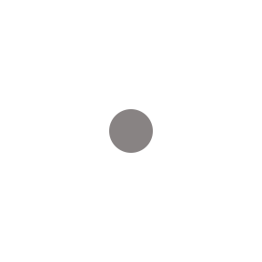

Your Projects
Calculator
Public
A calculator made for an assignment in the course The Odin Project. Concepts of objects, eventListeners, DOM manipulation were used.
JavaScript
Sign up Form
Public
A mobile-friendly sign up form built using html,javascript and vanilla css(form validation). Each input field is color coded with a custom error message for client side validation and better user experience.



CSS
Etch a Sketch
Public
A etch a sketch (pixelated sketch-board). It was made for an assignment in the course The Odin Project. Concepts of DOM manipulation,flexboxs,eventListeners were used.
JavaScript
Landing Page
Public
An office themed landing page made using html and css for an assignment in the course The Odin Project. Concepts of flexbox were used.
HTML
Rock Paper Scissors
Public
A website where the user can play the game of rock-paper-scissors against the computer. It was made for an assignment in the course The Odin Project. Concepts of DOM manipulation and eventListeners were used.
JavaScript
Object Detection
Public
Object detection of coco classes
Python
Chats
Michael Scott
please send me those documents
Jim Halpert
see you tommorw
Dwight Schrute
it was jim!!!
Pam Beesly
will u be attending the session?
Explore Repositories

TheOdinProject/curriculum
The open curriculum for learning web development
JavaScript
torvalds/linux
Linux kernel source tree

C
necolas/normalize.css
A modern alternative to CSS resets
CSS